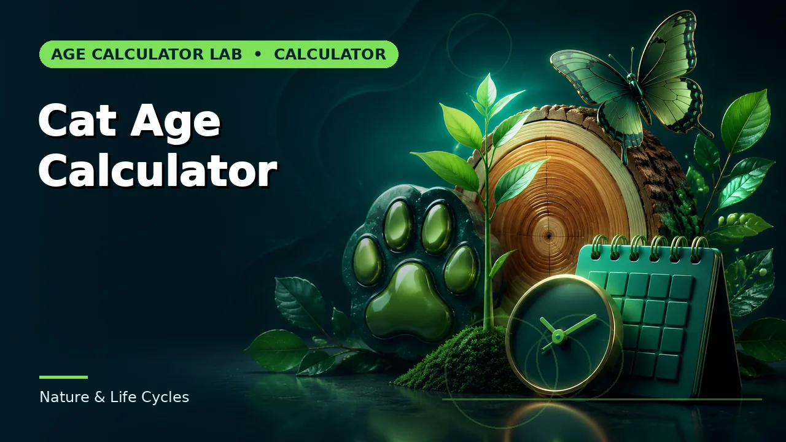
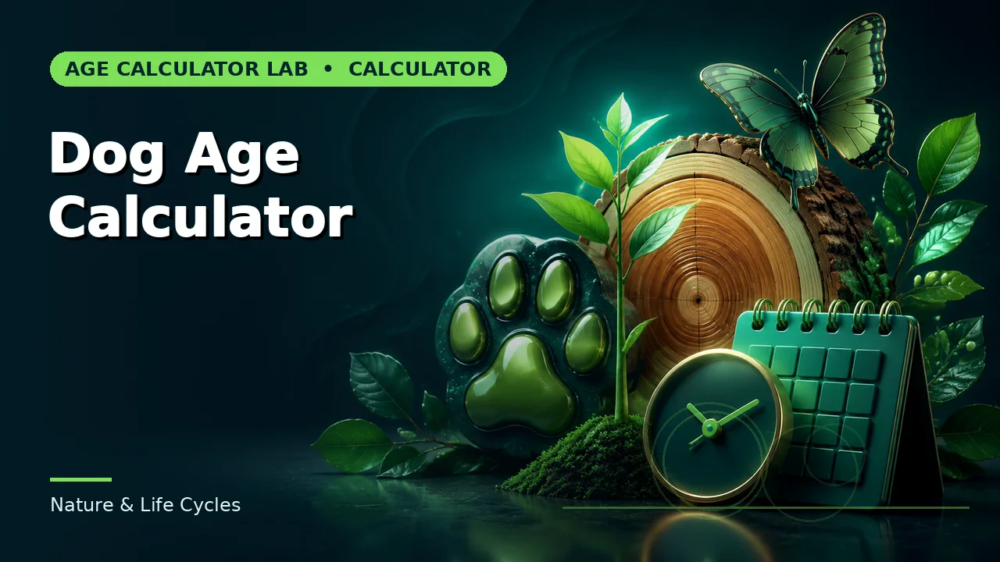

Quick answer
A one-year-old cat is roughly a fifteen-year-old human, a two-year-old about twenty-four, and each year after that adds around four.
The staged model
The widely used comparison puts year one at about fifteen human years, year two at about twenty-four, and roughly four human-equivalent years for each cat year thereafter. A five-year-old cat is around thirty-six; a ten-year-old around fifty-six.
The shape is the same as for dogs — steep then shallow — but the later slope is gentler and, importantly, much more consistent across individuals.
Use this guide with the right tool: Open the Cat Age Calculator for cat age expressed as an approximate human-age equivalent. If the question shifts, compare it with the Dog Age Calculator or the Age Range Calculator.
Why the dog formula does not transfer
Cats vary far less in adult size than dogs do. A domestic cat spans perhaps three to seven kilograms; dogs span two to eighty. Because size drives so much of the variation in dog ageing, and cats do not have that spread, a single cat model works reasonably well where a single dog model does not.
Breed effects exist in cats but are modest by comparison. The dominant variables are lifestyle and health rather than conformation.
Indoor and outdoor
Life expectancy differs substantially. Indoor cats commonly live into their mid-to-late teens and often beyond; outdoor cats face traffic, predation, territorial injury and infectious disease, and average considerably less.
That affects lifespan rather than the rate of ageing, so it does not change the human-equivalent comparison for a given age — a seven-year-old cat is a seven-year-old cat. It changes how likely the cat is to reach a given age.
Life stages are the useful part
Veterinary guidance generally uses stages rather than equivalents: kitten, young adult, mature adult, senior, geriatric. Those map to care decisions — vaccination schedules, diet, dental checks, screening for kidney and thyroid conditions — in a way the human-equivalent number does not.
Use the equivalent to build intuition, and the life stage to think about what the cat actually needs. Cats conceal illness well, which is why age-appropriate screening matters more than in some species.
Worked example
Substitute your own dates and follow the instructions that actually govern your situation. Where a result sits close to a cutoff, verify the underlying date and rule independently before relying on it.
Common mistakes to avoid
- Applying the dog formula. Cats vary far less in size, so a single model works for them and does not for dogs.
- Assuming indoor and outdoor cats age differently. They have different life expectancies, not different ageing rates. A given age compares the same way.
- Using the number instead of the life stage. Care decisions follow stages. The equivalent is for intuition.
Use the right calculator
Each of these runs in the browser, states its assumptions, and links to the neighbouring calculation when the question turns out to be a different one.


Frequently asked questions
When is a cat senior?
Commonly around eleven, with geriatric from about fifteen — though vets increasingly assess individually rather than by age alone.
Do pedigree cats age differently?
Breed effects on lifespan exist but are modest compared with the size effect in dogs. Lifestyle and health matter more.
How long do cats live?
Indoor cats commonly reach their mid-to-late teens and often beyond. Outdoor cats average considerably less.